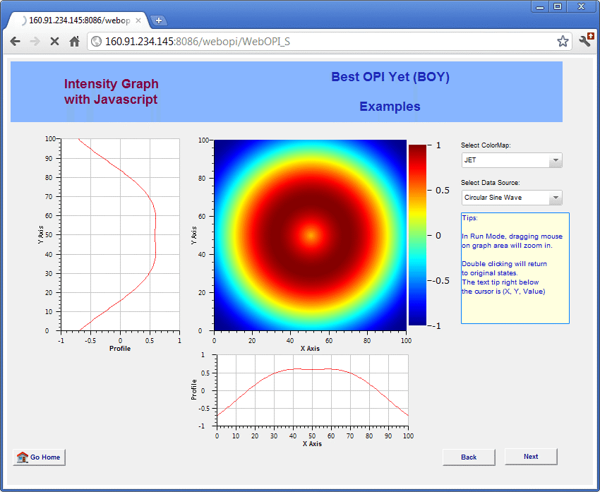
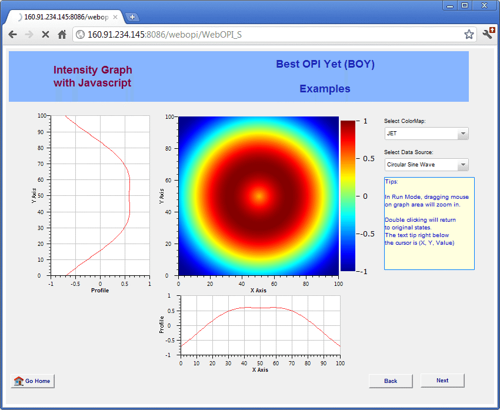
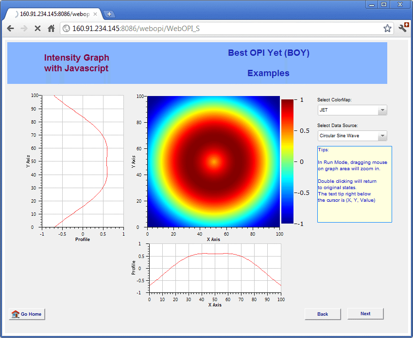

The dream to run BOY OPI in web browser becomes true! Most BOY OPI functions are supported, including Java script and Python script support! Without any particular change, you can easily publish OPIs created in BOY on a Tomcat Web server. WebOPI can also run on your mobile device such as iPhone.
WebOPI uses RAP technology behind, which helps to single source the code of BOY and WebOPI. PV communication and script execution are executed on server side. The web browser only does the graphics rendering.

WebOPI is a Web Archive (WAR) file deployed on Tomcat server. If you do not have Tomcat server available, then the first step would be installing Tomcat server.
After Tomcat server installed, copy WebOPI WAR file (webopi.war) to
$CATALINA_HOME/webapps/ ($CATALINA_HOME represents the root of your Tomcat installation).
The preferences of WebOPI are configured in $CATALINA_HOME/conf/css_rap.ini. After
WebOPI is properly configured, you can start Tomcat using
$CATALINA_HOME/bin/startup.sh. (You need to restart Tomcat server each time after you
make changes to the configuration.)
css_rap.ini follows the same format of plugin_customization.ini in CSS product. Below is an css_rap.ini example, you can make corresponding modifications for your site.
#EPICS configuration org.csstudio.platform.libs.epics/auto_addr_list=false org.csstudio.platform.libs.epics/use_pure_java=true org.csstudio.platform.libs.epics/addr_list=127.0.0.1 192.168.1.2 org.csstudio.platform.libs.epics/max_array_bytes=160000 #WebOPI configuration org.csstudio.webopi/opi_repository=C:/path/BOY Examples/ org.csstudio.webopi/startup_opi=main.opi org.csstudio.webopi/color_file=C:/path/color.def org.csstudio.webopi/font_file=C:/path/font.def org.csstudio.webopi/top_opis=http://www.xxx.com/xxx/Site/main.opi org.csstudio.webopi/macros="N","North"|"W","West"|"SYS","LLRF"|"SubSys","HPM"
In above example, EPICS configuration items are same as in CSS. Most items in WebOPI configuration are same as in BOY, but there are two additional items must be configured:
If you directly put webopi.war under $CATALINA_HOME/webapps/, then the address to
access WebOPI would be http://your_site.com/webopi/. or http://127.0.0.1:8080/webopi/.
You can also rename webopi.war to whatever name you like, such as your_name.war, then the URL would
be http://your_site.com/your_name.
Once after you connected to above URL, it will automatically append /WebOPI to the URL.
Using above URL will open the start up opi specified in css_rap.ini. To open other OPIs,
you can directly append ?opi=path_to_opi.opi to the URL. For example:
http://your_site.com/webopi/WebOPI?opi=1_1_Start_Up.opi
WebOPI also support standalone mode, in which there will be no toolbar and editor tab. See
figure below. To access OPI in this mode, you simply need to replace WebOPI
to WebOPI_S in the URL. For example:
http://your_site.com/webopi/WebOPI_S

Here is the list of things that are not supported in WebOPI, please avoid to use these functions in your OPI if you want to deploy it on web.
Using shutdown.sh cannot fully shutdown tomcat sometimes, so you have to kill tomcat manually and
then start tomcat again. The command to find tomcat's pid is ps aux|grep tomcat